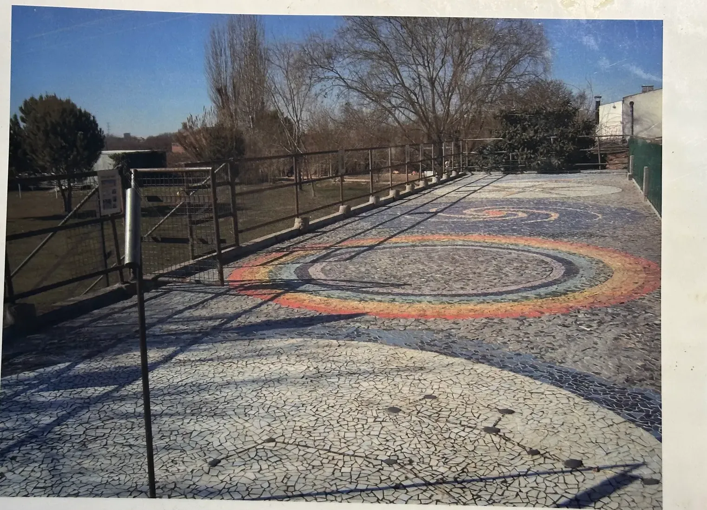
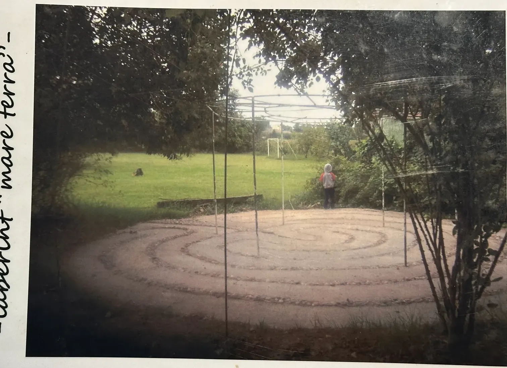
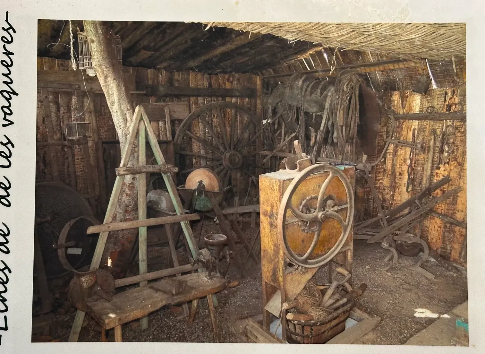
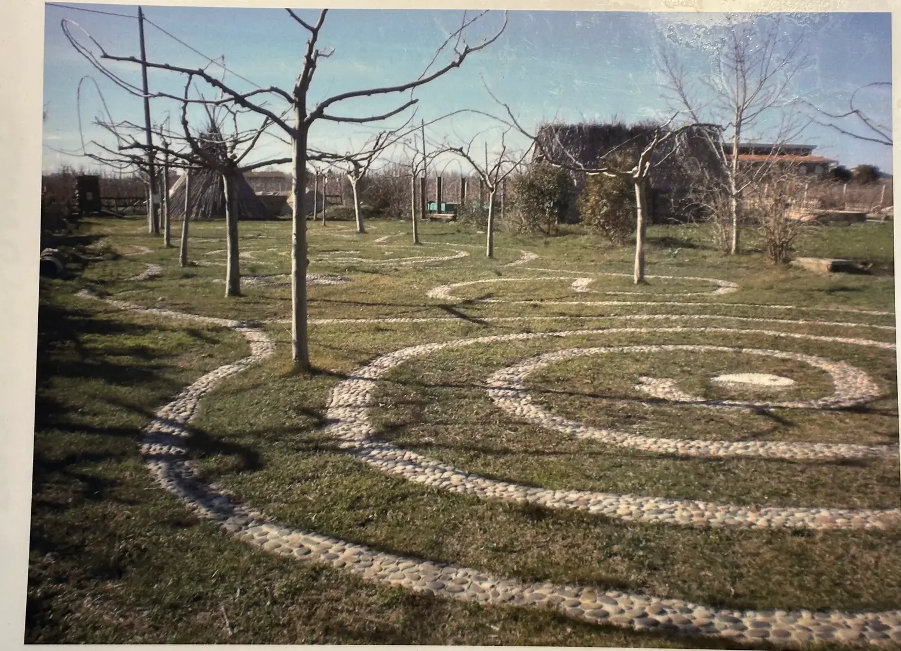

The plan

The album's cover is a coloured plan of the whole estate, between the Camí de les Vaqueres and the Camí de Grenyana roads, 3 km from Lleida and 5 km from Alcoletge. These spaces are marked on it:
- Viewpoint “Mosaic of the sky”
- Museum “Tools of Les Vaqueres”
- “Mother Earth” labyrinth
- Plane-tree walk
- “Racó d'herbes” herb garden
- Scent point
- Garden of the senses and traditional vegetable garden
- Nature classroom
- The black poplar
- Hen house, porch and clover field
- Snail field, plum orchard and walnut walk
- Playground, the Torre, the house and the car park
Sky viewpoint

“Mother Earth” labyrinth

Water curtain “Rainbow”

Tools of Les Vaqueres

Racó d'herbes

Labyrinth “The path of life”

Scent point

The black poplar

The black poplar (Populus nigra) is a tree that signals water nearby, and its height announces it from far away.
Our poplar stands beside an irrigation channel, at the point where four owners' fields meet, which makes it a meeting place for them when it is time to water. Channels and ditches are, after all, what the Horta exists on: the irrigated farmland where we are, and which we stand up for.
And this is no ordinary poplar: it is a monumental tree, the second-largest black poplar in Catalonia, with its own ecosystem around it, a particular flora and fauna of its own.